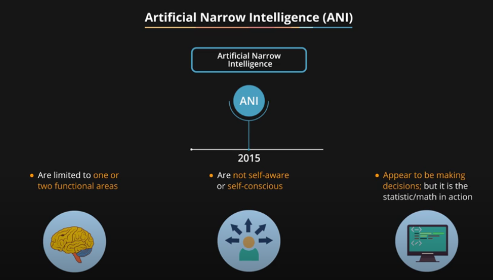

Not all types of AI all the above fields simultaneously. Different Artificial Intelligence entities are built for different purposes, and that’s how they vary.
AI can be classified based on Type 1 and Type 2 (Based on functionalities).
Here’s a brief introduction the first type.

This article is part of Demystifying AI, a series of posts that (try to) disambiguate the jargon and myths surrounding AI.
In 1956, a group of scientists led by John McCarthy, a young assistant-professor of mathematics, gathered at the Dartmouth College, NH, for an ambitious six-week project: Creating computers that could “use language, form abstractions and concepts, solve kinds of problems now reserved for humans, and improve themselves.”
The project kickstarted the field that has become known as artificial intelligence (AI). At the time, the scientists thought that a “2-month, 10-man study of artificial intelligence” would solve the biggest part of the AI equation. “We think that a significant advance can be made in one or more of these problems if a carefully selected group of scientists work on it together for a summer,” the first AI proposal read.
More than six decades later, the dream of creating artificial intelligence still eludes us. We still don’t have thinking machines that can think and solve problems like a human child, let alone an adult. But we’ve made a lot of progress, and as a result, the field of AI has been divided into artificial general intelligence (AGI) and artificial narrow intelligence (ANI).
AGI is still a theoretical concept. It’s defined as AI which has a human-level of cognitive function, across a wide variety of domains such as language processing, image processing, computational functioning and reasoning and so on.
We’re still a long way away from building an AGI system. An AGI system would need to comprise of thousands of Artificial Narrow Intelligence systems working in tandem, communicating with each other to mimic human reasoning. Even with the most advanced computing systems and infrastructures, such as Fujitsu’s K or IBM’s Watson, it has taken them 40 minutes to simulate a single second of neuronal activity. This speaks to both the immense complexity and interconnectedness of the human brain, and to the magnitude of the challenge of building an AGI with our current resources.
Artificial General Intelligence is on-par with human capabilities, i.e. AGI system can perform any task that a human can. However, AGI systems can perform the task with greater efficacy than humans only for a particular/single function assigned to them, while they have zero capability to do any task which is not assigned to them. On the contrary, a human performs the task with less proficiency but can perform a broader range of functions than any of the existing AI applications of today.
To simply put, AGI is a kind of artificial intelligence we see in the movies, like the robots from Westworld or star trek: The Next Generation. AGI is a machine with general intelligence much like a human being, to solve any problem.
We’re almost entering into science-fiction territory here, but ASI is seen as the logical progression from AGI. An Artificial Super Intelligence (ASI) system would be able to surpass all human capabilities. This would include decision making, taking rational decisions, and even includes things like making better art and building emotional relationships.
Once we achieve Artificial General Intelligence, AI systems would rapidly be able to improve their capabilities and advance into realms that we might not even have dreamed of. While the gap between AGI and ASI would be relatively narrow (some say as little as a nanosecond, because that’s how fast Artificial Intelligence would learn) the long journey ahead of us towards AGI itself makes this seem like a concept that lays far into the future.